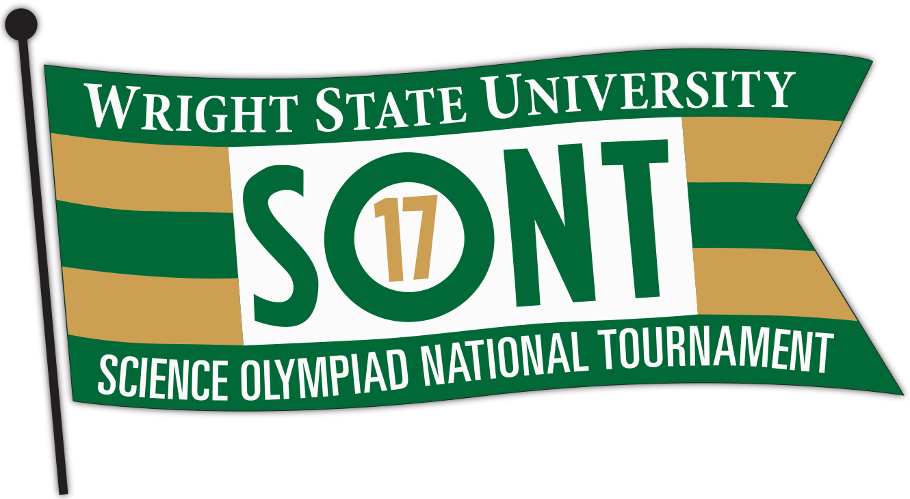

Science Olympiad

Rockets and Arenas
D
ue to last minute changes, Wright State became the host of the 2017 Science Olympiad, a world wide science competition. With a small team between Wright State and the Nutter Center arena production team we organized and hosted over 2000 students in just 5 weeks. I was tasked with creating the theme, digital displays, animations, lower thirds, and presentations for the keynote.- User Experience
- Graphic Design
- InDesign
- Photoshop
- Illustrator
- Photography & Video Editing
- Strategy
- After Effects
- Animation
Processes
Working under a tight timeline we laid out a progression map of tasks that needed to be completed. Beginning with a mood board focused on travel and science I created a theme based on Wright State branding guidelines. From there we moved onto the Nutter Center and I created displays and animations to fit every display in the arena. Working every day during those 5 weeks up until the last hour before the event, we pulled off a flawless Science Olympiad for the students.
{kind=link}
{kind=link}
{kind=link}